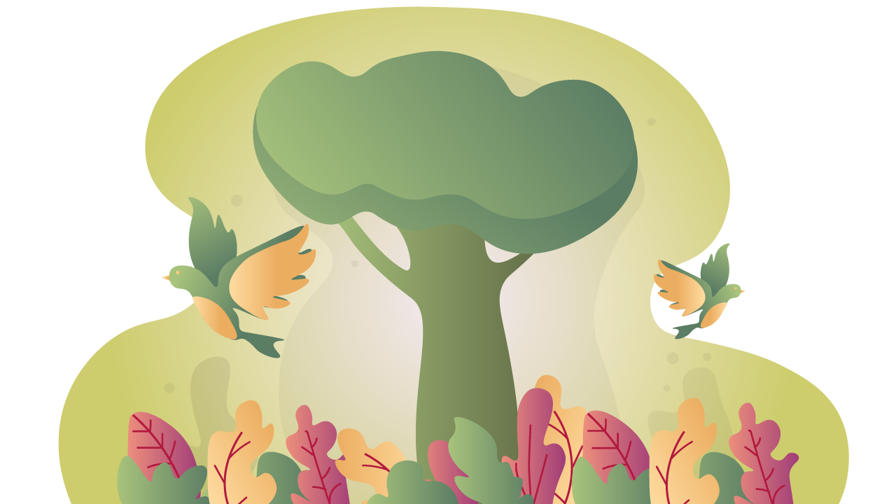
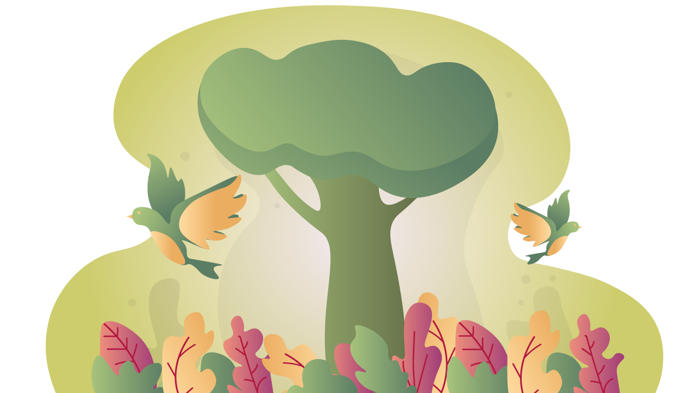

Kelompok 5<3
Untuk maniez maniezku


Untuk kelompok 5 terima kasihh sudah mewarnai satu bulan aku dan jansen kita sangat senanggg bisa ketemu sama kaliaannn, kita mau ngucapin maaafff yang sebesar besarnya kalo kita ada salah sama kalian atau kurang menemani kalian selama satu bulan terutama ak huhu maaf yaaa hari sabtu dan minggu aku ga bisa menemani kalian seharusnya hari minggu aku bisa nemenin kalian tp karna kondisi aku ga memungkinkan untuk banyak gerak jadi aku ga bisa anter kalian main games tapi aku harap kalian seneng seneng ya waktu hari mingguu. makasih yaa karena udah nerima aku dan jansen dengan baik di kelompok 5 semoga aku dan jansen selama ini ngajarin kalian satu atau dua hal tentang bisdig maupun diluar bisdig karena kalian juga udah ngajarin aku dan jansen ko ga sebaliknya ajaa. meskipun udah ga digivolution aku harap kita masih bisa berteman baikk dan main main ke depannya kalo mau main main ajak aku sm jansen yaa xixi kita pasti ngeluangin waktu untuk kalian kok muahh xixixix makasihhh udah mau menjamet bersama ak dan yansen maaf kalian dpt duo LO jamet semoga ga pusing sama chat ak yg kadang tidak terbaca WKWKW tp ini bukan akhir kokk ke depannya kita bakal tetap bertemu entah itu di gedung FEB atau di organisasi, aku tunggu kalian di hima tahun depannn!! buat yg masih mau ketemu jansen ayo join basic dan join dbcd biar ketemu aku lagi hihihi sekali lagi thank you anak anakqqqqq for creating a beautiful memory in my lifeeeee muah cieh nanti kita main lagi yaa kalo aku udah agak sembuhan buat LO time terakhir!! ak juga ingin kalian tau kalo kalian adalah anak anak yg super kerennnn aku harap kalian semua bisa berkembang dan digivol ini jadi batu loncatan buat kaliann aku sangat menantikan kalian mnjadii orang hebat di bisnis digital karna aku percaya anak anak disini semuanya berpotensi besar untuk mnjadi orang hebattt!! kehidupan kuliah ini akan capeq dan berat tfie kalo kalian merasa kesulitan i want to let u guys know kalo aku selalu open untuk menjadi tempat keluh kesah kalian tentang apapun ituuu, meskipun digivol sdah berakhir tfie hubungan kita tdak berakhir yahh!! u guys did a very great job di digivol dan aku sangat mengapresiasi semua usaha kaliaannnn!! ak bangga dengan hal kecil sampe ke pencapaian kalian selama di digivolll!! ak melihat banyak perubahan kecil ke besar yang mungkin kalian ga bisa liat tapi sebagai LO aku bisa melihat ituu,, pokonya akus super bangga!!! semangat dan sukses selalu anak anakqqqqq lovyu full<3
Ini waktu first meet di TSP yg sbnernya agak awkward tp yasudah namanya jg first meet WKWKW adit ban motor qm aman kh,, inilah awal mula klean memenangkan best introduction video hihihi super bangga emg udh pasti menang sih ayo kita main main lg di tsp sampe gelap ga keliatan ky waktu pas scavenger hunt seruw apkh kita jurit malam di tsp next LO time?
AAAAA ini LO time kita di heyho yang super lama fyi LO time kita adalah LO time terlama diantara semua kelompok sampe panit lain suka bingung ngapain aja LO time 5 jam... TP SUPER SERUUUU makan di pujas meskipun tampilan makan ak zonk tp enak soalnya makannya sm kalian xixi maloe ga :vvvv makasih yaa udah meluangkan waktu kalian meskipun adit sm sharla ga bisa ikut huhu sedihh gapapaaa next time kita heyhoan lagii pokonya LO time disini super seru banyak yg dibahas spertinya kalian juga sambil cape nugas digivol siih WKWKKW tp gffh krn ngerjainnya bareng jadi harusnya seru yaaaa. tugas IIC ini berguna bgt kokk diinget inget ya biar nanti pas dapet matkul ini udah gg gaming!! ayo kita LO time 5 jam lagi mau 24 jam pun ak bersedia demi kalian apa yg enggax awwww
Scavenger hunt sore sore udah kekunci di FEB WKKWKW untung kita menemukan jalan masuk kalo ga kalian scavenger huntnya dua kali... PALMER SM BRYANT GA BS DATENG JD MISAH FOTONYA SEDIHHH ini seruw juga meskipun ak tau kalian udah cape banget disini soalnya harus nugas apk si matkul ga jelas tp semoga ini bisa jadi kenang kenangan buat kaliann! maaf aku sm jansen ngajaknya sore dan kita susah banget nyesuain jadwal ya allah... kelas kita tabrakan semua sedih hiks sama sama sibuk 24 sks huhuhuhu tp gpp de biar kalian kalo sore sore keinget ak sm jansen,, ap siech,,
LO TIME TERAKHIR KITA LUPA FOTO GESSS AAAA PDHL ADA SHARLAAAA HIKSROT jd pake foto pas di ws aja yah,, LO time di plumer terus diusir pindah ke sono taunya ditodong harus beli makan mana makanan ak zonk kentang goreng segede upil 15 rebu udah dapet nasgor enak itu huhhhh tp tmptnya pewe sih kalian sdank sibuk menyiapkan prototype dan name tag WKWK disini ak br tau apipah dipanggil joya bnyk juga ya bocah panggilannya kamu mau dipanggil joya atau kokom??? nico disini vc sm kating pdhl udh diusir dr plumer WWKWKKW sharla kamu terlihat ceria disini sering sering senyum donkk kmu manis bgt klow senyum,, disini klean sedank sibuk bikin ppt dan lord azka lagi brainstorming bikin prototype super keren dibantu sm palmer wowww kalian gg gaming aku mau ngajarin aja jd bingung krn kalian udh sejago itu
SUPER BANGGAAA KARENA KALIAN MENANG BANYAK AWARD BEST VIDEO DAN BEST PROTOTYPE HIHI sebenernya udah ketebak sih soalnya prototype kalian bener bener sekeren ituu aku yg kating pun gatau ada sebanyak itu fiturnya soalnya aku biasanya pake figma buat ngedit foto kl aplikasi jarang... JD KALIAN KEREN BANGETTTTTTT toel azka karena azka mastermind dibalik ini semua azka sumpah kamu keren bgt lord figma gg gg gg pasti beberapa bulan ke depan kamu tambah jago ngedit hihi figma kalian dipuji terus sama panitia "EH INI JAGO BGT FIGMANYA" iy donk anak anak aq xixixixiix SELAMAT YAHH!! ga cuma prototypenya aja tp idenya juga udah bagusss kalian kereeennnnnn bgttttt semoga prico beneran bisa jalan ya HAHAHHA nanti aku sm jansen jd pelanggan setia prico!!!
HUHUUU MAAF DISINI AK GA BISA NEMENIN KALIAN KESANA SINI,, tp dr muka mukanya kalian terlihat tersenyum n tertawa ak sbenernya mixed feelings sih krn seneng dan di satu sisi sedih ini adlh perpisahan kita hiksrot,, ak sedih ga bs menjamet lgie bersama beby yg sbnernya sudah aku incar untuk mnjadi kelompok ak dr awal bertemu xixixi ga bs cerita cerita dan reunian lg sm theona yg super bawel gemesin kamu lucu bgt kata panitia jg kamu cerewet lucu,, ga bisa bercandain joya lgie WKWK joya kamu seneng nanyain ttg digivol pdhl ak ga bs jawab joya jgan takut di eval yh,, ak ga bs melihat senyum manies sharla lagie KMUU JARANG IKUT LO TIME HIKS SEDIHHH GR GR ADA HALANGAN TERUS HUHU SHARLA AYO KITA MAENNNN,, ak ga bisa mndengar zahira yg super lemah lembut suarany lagie zahira kmu agak diam tp kl ngomong kdg out of the box LUCUU,, ak ga bisa melihat ocehan arga lagie sebagai pja WKWKWK tenang arga udh beres kok digivol lanjut ketang kh arga kamu keren bgtgtgtgt smangat ya met boboooo,, ak ga bisa melihat palmer yg lucu lg palmer ak gmes bgt sm kmu!! ayo kita nonton drama IU bareng,, ak ga bisa ngobrol lg dengan nico yg super murah senyumm kamu klw diajak ngobrol senyum terus gemesss,, ak tdak bs bertemu adit lgie yg meskipun kita jarang bertemu dan ngobrol tp kamu aneh kelakuannya ak terhibur yg rajin ya ngajinya adit,, ak tdak bisa ngobrol lg sm naufal tentang coding dan bisdig kamu diam diam antusias ttg banyak hal nofal,, ak tdak bisa melihat bryant tertawa lgie bryant jarang ngomong tp gampang ketawa xixixi meskipun kita jarang interaksi tp ak snenk bisa jd lo kamoo si basket boy keren maaf yh kamu di eval gr gr jarang ngabarin LO itu mmg sudah tugas di digivol,, ak dan jansen ngerti bgt kokk kamu emang sibukkk SMANGAT BASKETNYA BRYANTT,, last but not least BTW DISCLAIMER INI AKU NGURUTNYA GA BERDASARKAN APA APA YA JD TERAKHIR BKN BERARTI AK LUPA I LOV U SEMUA,,, BUAT AZKAAAA si lord figma ak sedih kita ga bs main figma lagie ngobrol ngobrol tipis kamu kenapa kalo ngobrol suka menghindari eye contact gugup kh:(( KMU GEMOY BANGET AZKAAA KELOMPOK 5 CUTE SEMUAAA nanti kita belajar figma brg brg ya!! Terakhirrr trima kasiehh untuk jansen si partner LO aku,, ak awal kenal sm jansen dr vc digivol ges ak sm jansen vcnya sejam dia emg kayanya vc sm semua org sejem deh?? entah dia gabut atw gimana tp emg LO kalian yg satu ini super seru untuk diajak ngobrol jadi kalo mau nanya nanya ke si jansen tanya aja dia cerewet banget kaya theona tapi versi kalemnya MKSIEE JNSEN sudah menemani ak dan maaf harus ngecover ak mnemani dede dede gemes ini di digivol oflen!! met istirahat jansenn kmoe partner LO yg terbaikkkk cieh malu ga,, stay bestpren bersama ak yh kawan!!
ⓒ Kelompok 5 @ Digivol